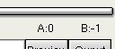

|
Découper 1.Découpage simple Les marqueurs A et B servent à indiquer le début et la fin d'une séquence. Vous pouvez les définir à l'aide des boutons Vous pouvez également passer directement à l'emplacement du marqueur A ou du marqueur B en choisissant Markers->Go to A ou Markers->Go to B. La position des marqueurs apparaît également au bas de l'écran. . La valeur -1 correspond à la fin de la vidéo. Si vous définissez les marqueurs, seule la partie de la vidéo située entre les points A et B compris sera enregistrée. C'est-à-dire [A,B]. L'entrée de menu Markers->Delete permet de supprimer le segment [A,B[ du flux. Elle peut par exemple être utile pour supprimer la publicité dans une capture vidéo. Vous pouvez supprimer tout ce que vous voulez du flux vidéo. Lorsque vous supprimez une partie d'une vidéo, l'audio à l'intérieur du flux reste synchronisé, ce qui n'est pas le cas de l'audio externe. Assurez-vous donc de ne découper que des flux contenant l'audio.
Ce paragraphe ne s'applique que lorsque la vidéo est en mode Copy. En mode Process, les fonctions internes d'Avidemux s'assurent que tout se passe bien. La plupart des codecs se servent de l'image précédente comme référence et n'encodent que la différence. De temps à autre, une image est encodée sans référence temporelle à un autre image. On parle alors d'image I (I-Frame) ou d'image clé. Cela implique que si vous avez un flux de la forme xxAxxIxxBxxxIxxx, et que vous supprimez [A,B[, vous obtenez un flux de la forme xxOOOIxxxxx, où OOO sont des images brisées. Pourquoi brisées ? Parce qu'elles ont perdu leur image de référence. On peut gérer ce point de deux manières : 2.Découpage avancé En choisissant File ->Set mux options, vous pouvez indiquer une taille de fichier en mégaoctets. Chaque fois que cette taille est atteinte et qu'Avidemux peut trouver une image I, il crée un nouveau fichier. Vous obtenez ainsi une série de fichiers foo.avi.1, foo.avi.2 etc. Comme le nouveau fichier doit commencer par une image I, la taille n'est pas très précisé, c'est pourquoi il est souhaitable de prévoir une marge de 5 Mo. Vous avez également la possibilité de passer par le menu Misc->cut wizard. Placez le marqueur A au bon endroit avant de lancer l'assistant. Saisissez les informations suivantes : taille du fichier cible, nombre de pistes audio et débit de celles-ci (ces champs sont préremplis). Le programme vous indique alors où placer le marqueur B pour atteindre la taille voulue. Cet assistant est encore un peu buggué pour le moment. |
 et
et  .
.